UI Design
UX Research
Competency Assessment Tool
Designed a web application that streamlines competency assessment for a large enterprise organization.
View CaseEmployees at Blue Harbor had to manually raise a ticket in ServiceNow for almost anything — software access, a broken laptop, a simple question. I designed the Employee Portal Application (EPA): a mobile app that replaces that manual process with an automation-first experience, resolving requests in a tap instead of a form.
*Blue Harbor is a fictional client name used to protect confidentiality.
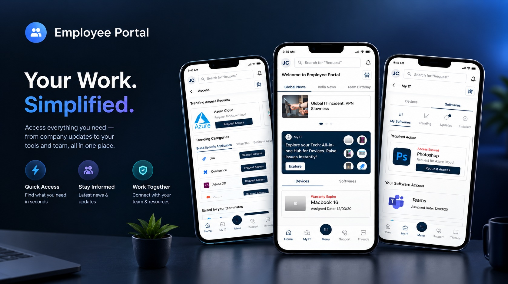
As a Designer at TCS Interactive, I designed the Employee Portal Application — a mobile app that makes IT requests easier for everyone at Blue Harbor. Instead of filling out a form, employees raise requests or report issues through a smart, automation-first flow that can grant access to software or services with a single tap.
Ticketing ran entirely through ServiceNow: employees manually created a ticket for every request, and support teams manually fulfilled each one. Ticket volume was resolved almost entirely by hand.
To understand the existing ticket-raising journey end to end, I raised several tickets myself through ServiceNow and mapped the pains and gains into a Customer Journey Map. That map shaped the questions I brought into interviews with 4 end users and 2 admins, surfacing behavior patterns around what motivated — and blocked — people from raising a ticket.
An end user here is any Blue Harbor employee trying to fulfill an IT request — across departments, roles, and technical comfort levels. Quotes from the interviews were clustered through several rounds of synthesis to surface the real problem areas.
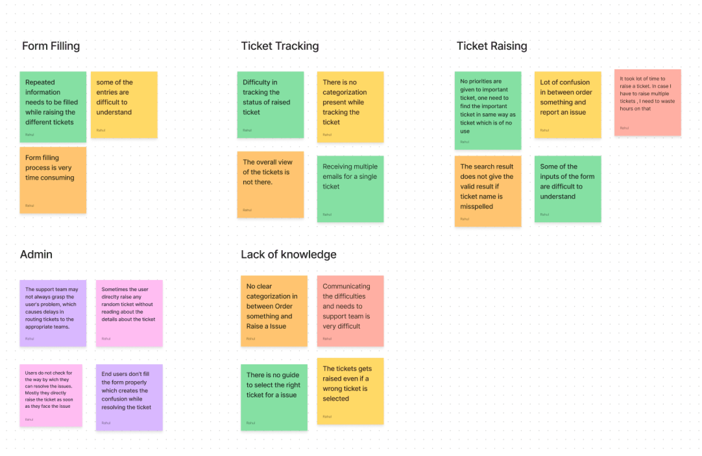
New employees had to submit multiple separate tickets just to request the access they needed on day one.
Even keyword search surfaced too many options, and there was no dashboard to guide people to the right one.
Employees repeatedly filled near-identical forms to request access to different software or services.
Most tickets could have been fixed by the user in a few steps — but with no guidance, they raised a ticket instead.
Also common
Five goals shaped every screen that followed.
Search, intuitive navigation and organized content get employees to the right ticket quickly.
Quick access to Raised Tickets, My Approvals and Order Something is obvious, not hidden.
The app adapts to individual roles and preferences, surfacing what's relevant to that person.
Discoverability and affordance only matter if employees can act on them with minimal effort.
Interactive widgets and small playful touches keep employees engaged with the app.
Several rounds of design were shared with stakeholders, who gave feedback on overall impression, usability, and how difficult each direction would be to implement.
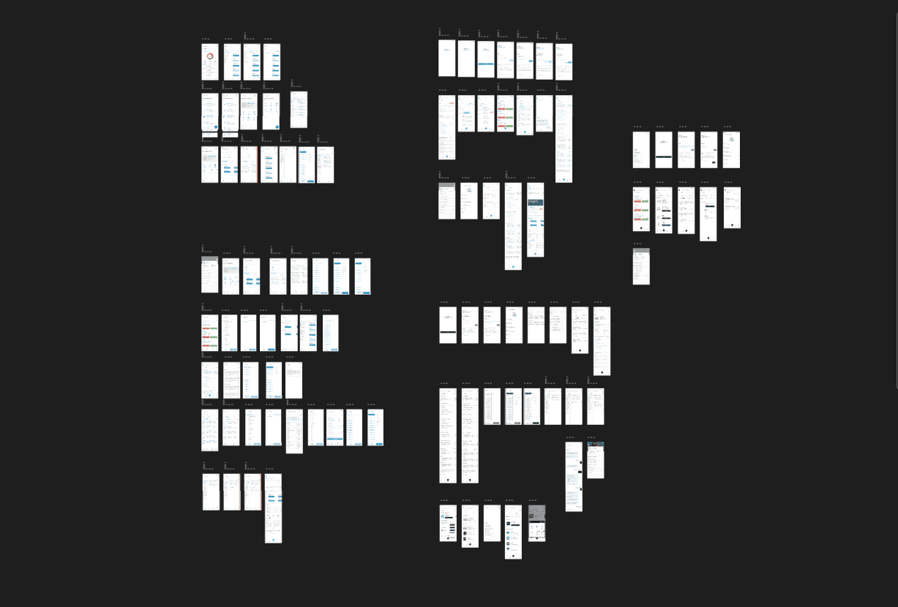
In the old flow, raising a ticket meant first choosing between "Order Something" or "Raise an Issue," then picking from a long list under whichever section — so users frequently ended up selecting the wrong ticket. I iterated heavily on bottom navigation so every core function a user comes to EPA for is one tap away, with first-level categorization built into the nav itself.
Access and My IT were split out as their own top-level destinations, since most tickets fell into one of those two buckets but were previously buried inside "Order Something."
Inside the app
A global/local news carousel and team updates keep the app engaging beyond ticketing. The My IT widget puts the most common request types — device and software issues — front and center, and Trending / Raised by Colleague / Role Specific tabs surface tickets relevant right now, each raisable in one tap.
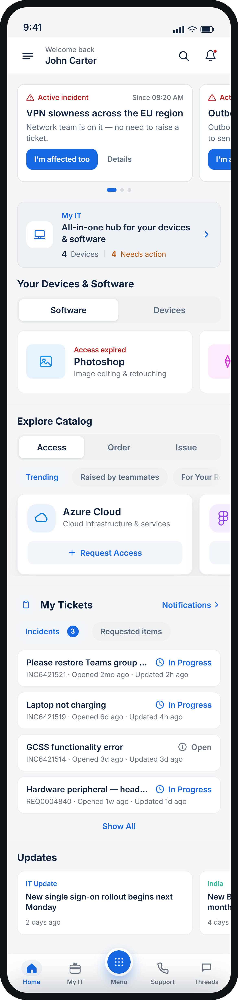
Device and software tickets used to be buried inside "Order Something" with many touchpoints. My IT gives them a dedicated home: users switch between the hardware tagged to them and the software they have access to, with any required action surfaced upfront so nothing gets missed.
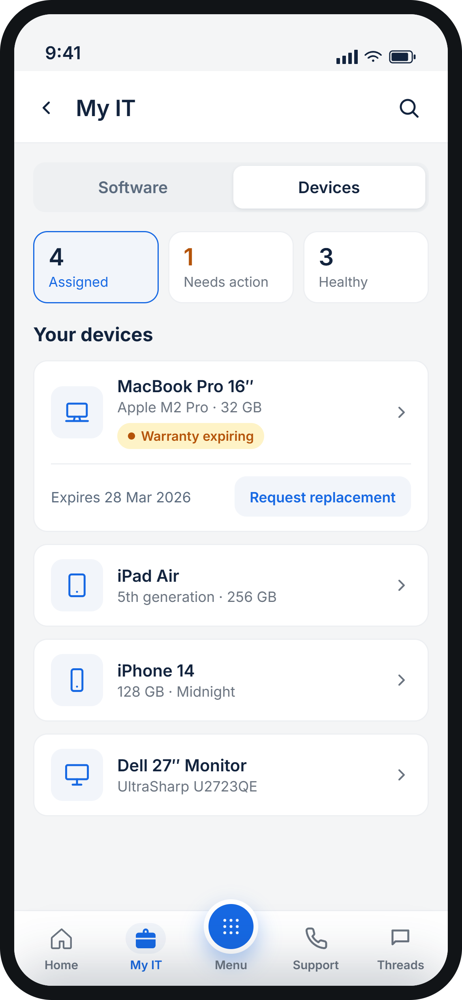
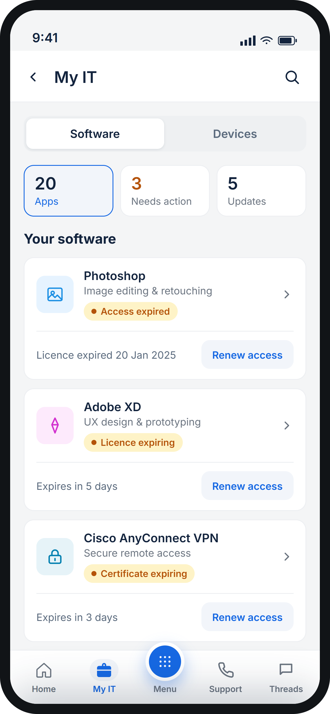
Many tickets never needed a form at all. For anything under Access, a single Request Access button raises the ticket instantly — with trending groups organized in tabs so employees can scroll straight to what they need.
Everything that used to live under "Order Something" and "Raise an Issue" in ServiceNow lives here now — using the same card and widget patterns as Access, so the experience stays consistent across the app.
A smart chat helps users find and submit the right ticket, guiding them through the steps to try before one gets raised at all — turning self-resolvable issues into just that.
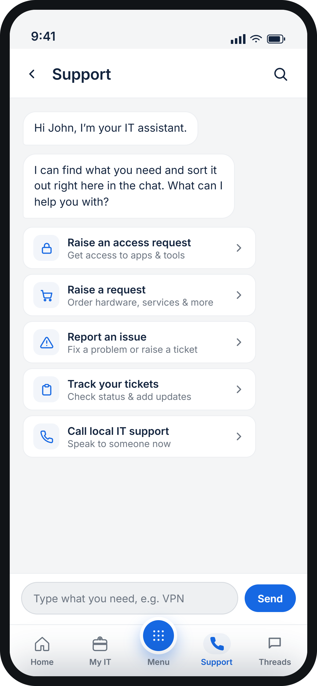
Filtering narrows results down in four progressive stages — category, then subcategory, then the resulting tickets — with each stage's options shaped by what was already selected. Users can also adjust filters live from an overlay without losing their place.
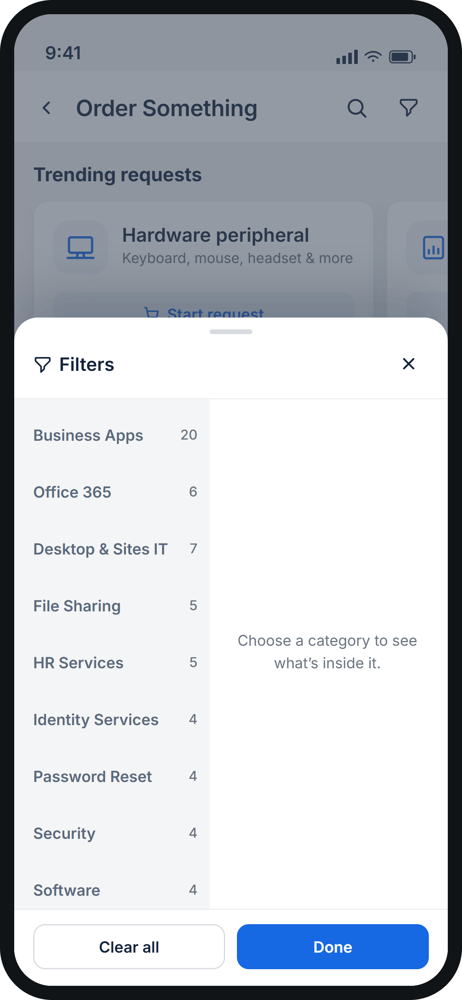
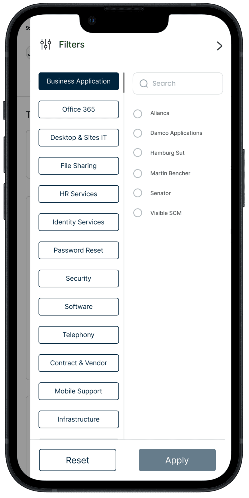
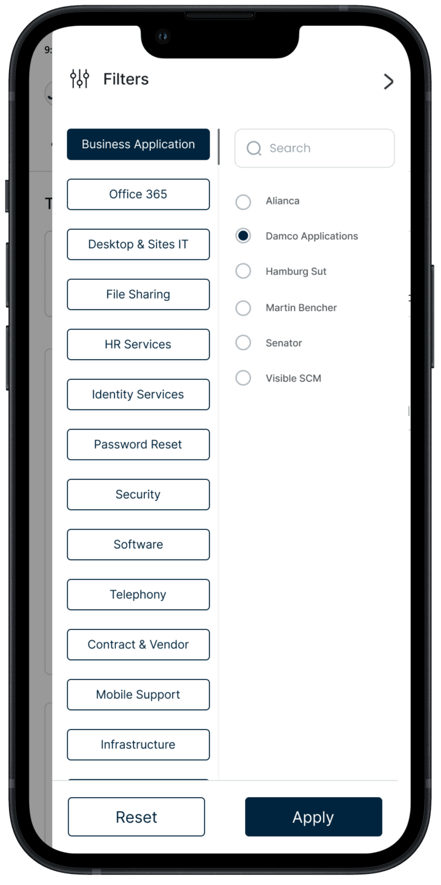
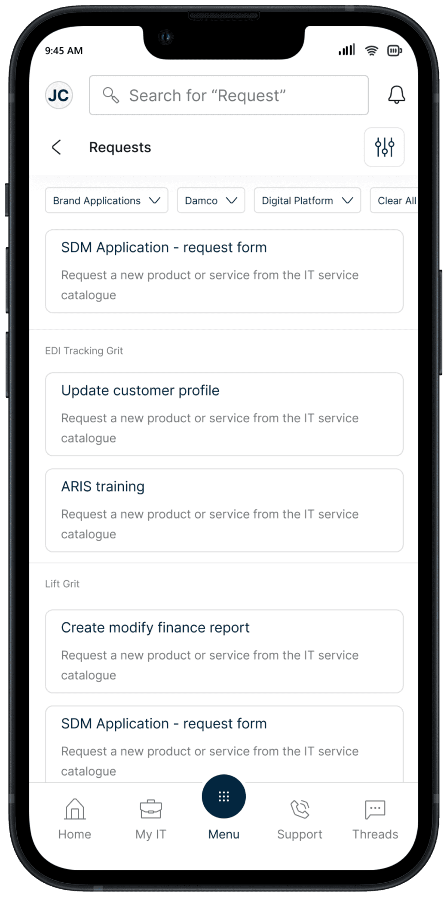
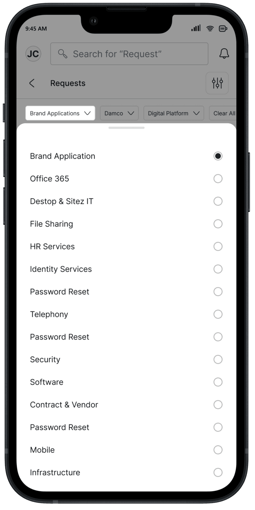
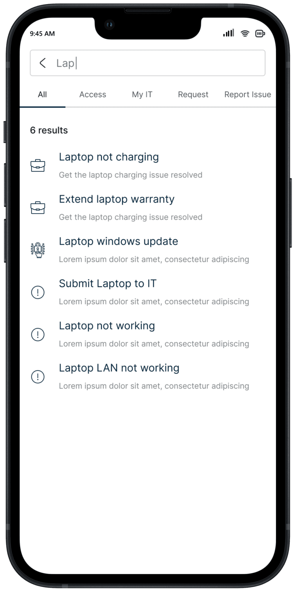
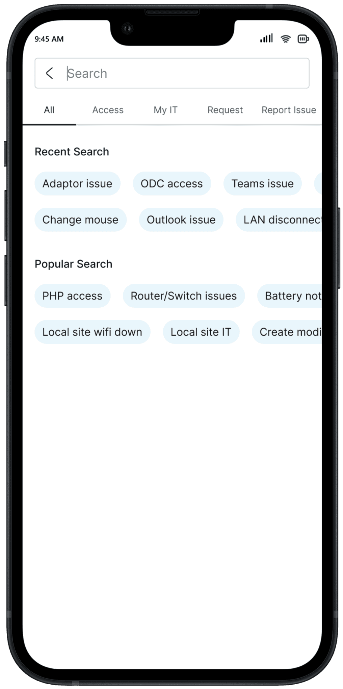
Raising a ticket in ServiceNow meant repeatedly filling near-identical forms — and admins found most issues were resolvable in a few steps the user simply didn't know to try. The smart chat now offers guided steps first; if those don't resolve it, the app raises the ticket by asking only for the fields that are actually needed.
Notifications, profile, and personal information round out the app — kept deliberately simple so they stay out of the way of the core ticketing flows.
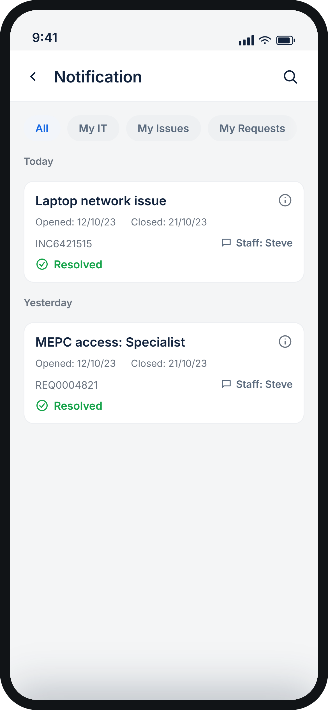
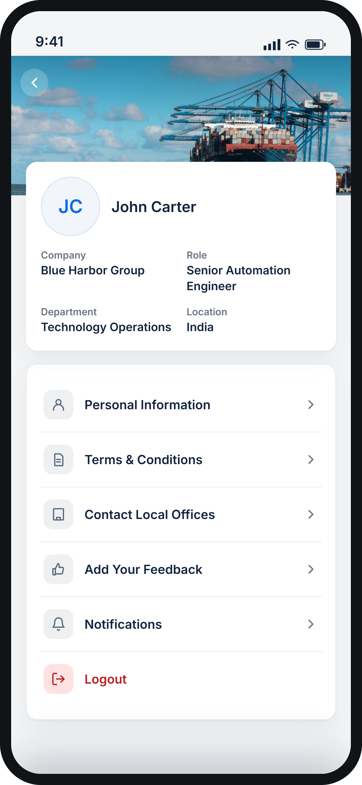
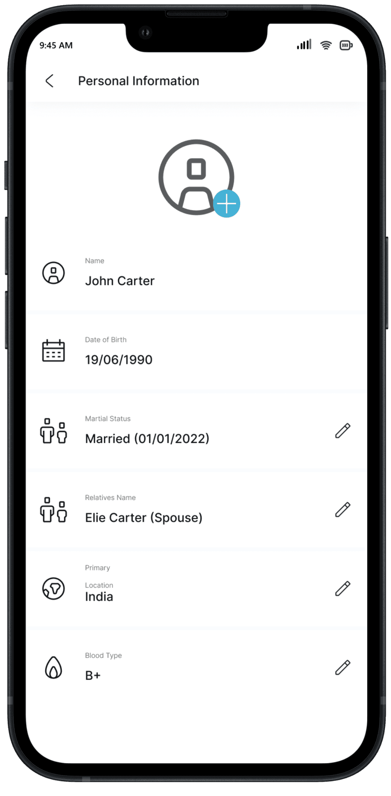
This case study covers the fundamental screens within the limits of space — there are more supporting flows and edge cases in the full product that aren't included here.
Employees can search by keyword or ticket number and see results instantly, with a visible result count so they know how much to scan through. Auto-suggestions offer real-time, predictive matches as they type — cutting the search short before it starts.
Simplifying an intricate ticketing workflow for users, without losing functionality for admins, was a core skill this project sharpened.
Structuring and organizing information to genuinely improve discoverability — not just reorganize it — took real iteration.
Tailoring the experience to individual roles and preferences meant designing adaptive interfaces, not one fixed layout.
Explore Other Work
Designed a web application that streamlines competency assessment for a large enterprise organization.
View CaseDesigned the seamless integration of AI and Augmented Reality into a mobile-friendly learning experience.
View CaseImproved usability of the eQ Technologies canvas, keeping design-system constraints and cross-product consistency intact.
View CaseContact
Have a project in mind, or just want to say hi? My inbox is always open.